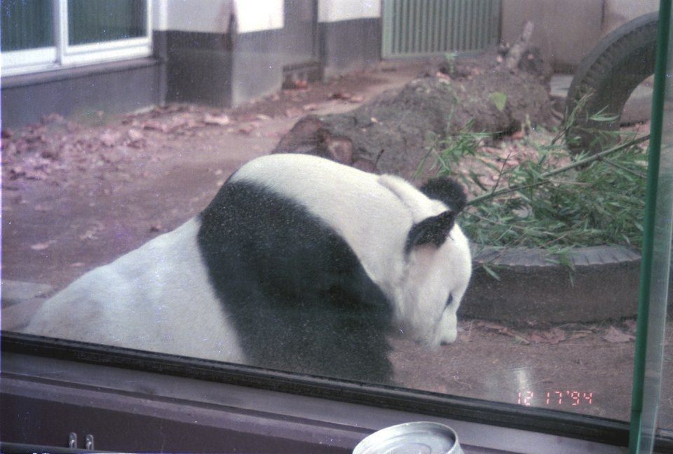
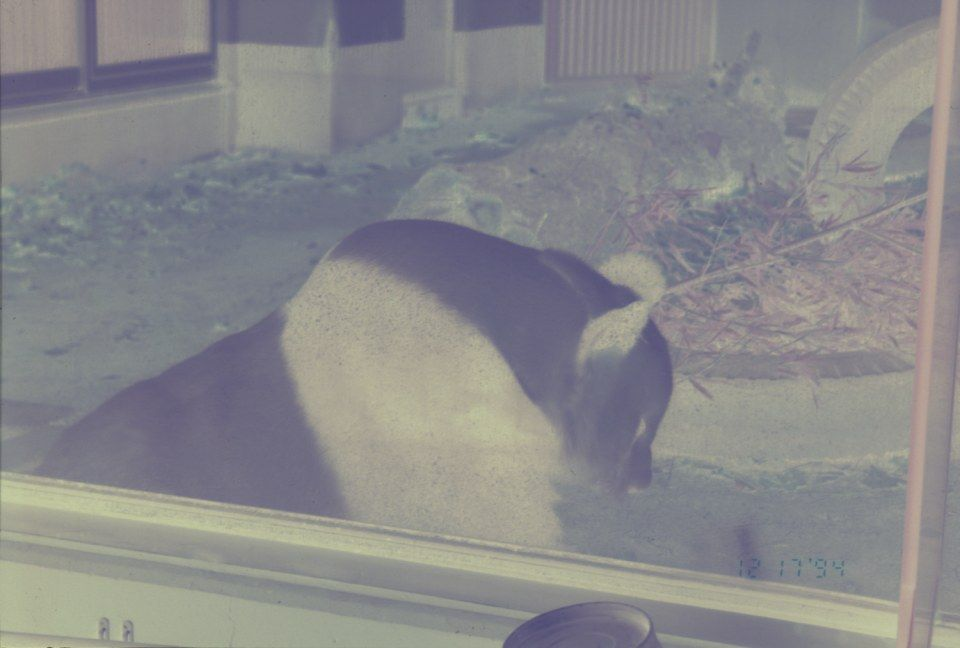
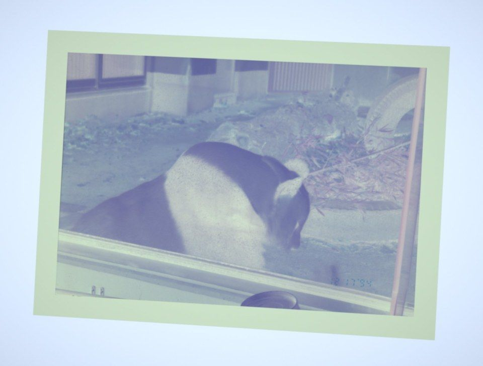
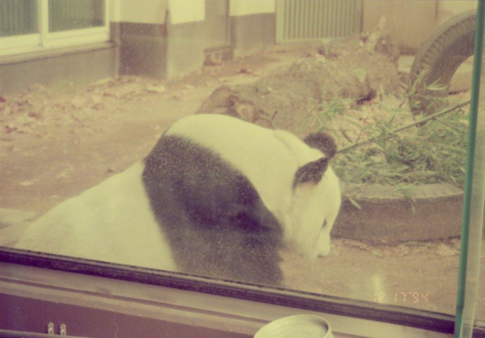
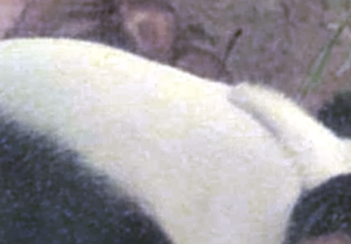
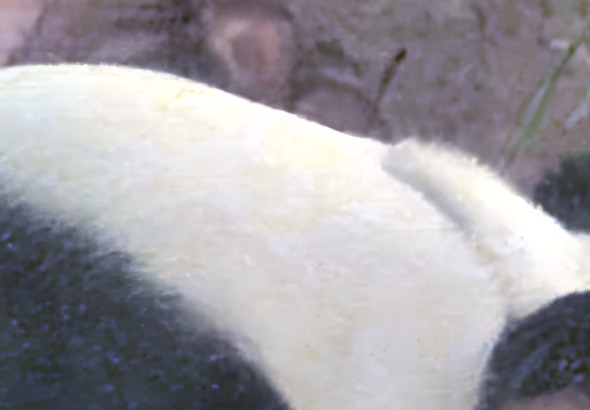

Originale
Original
Lo sviluppo fedele: i colori della pellicola, con la sua grana, la polvere e il rumore dello scatto.
The faithful development: the film's colours, with its grain, dust and the shot's noise.
Sviluppi il rullino a casa con una guida passo passo, poi fotografi il negativo con il telefono appoggiato su una luce. Il motore toglie la maschera arancione e inverte in densità, come farebbe un buon laboratorio.
Develop the roll at home with step-by-step guidance, then photograph the negative with your phone over a light. The engine removes the orange mask and inverts in density, the way a good lab would.


NegativoNegative SviluppataDevelopedIl progetto accompagna tutto ciò che viene dopo lo scatto. Lo sviluppo chimico resta indispensabile: un rullino non sviluppato non contiene ancora un'immagine visibile.
The project covers everything after the shot. Chemical development is still essential: an undeveloped roll does not yet hold a visible image.
Usi la tua macchina a pellicola come sempre. Il rullino finito va tenuto al buio.
Use your film camera as usual. Keep the finished roll in the dark.
Tank, sacca a tenuta di luce e un kit. I tempi vengono dalle schede ufficiali dei produttori; il timer scandisce bagni e agitazione.
A tank, a changing bag and a kit. Times come from the manufacturers' official data sheets; the timer paces baths and agitation.
Appoggi la pellicola su una luce (tablet o pannello LED) e la inquadri col telefono. Il motore trova il fotogramma e lo raddrizza.
Lay the film on a light (tablet or LED panel) and frame it with your phone. The engine finds the frame and straightens it.
Maschera arancione tolta, inversione in densità, carta da stampa simulata. Poi, se vuoi, la pulizia o l'AI.
Orange mask removed, density inversion, simulated printing paper. Then, if you like, clean-up or AI.
Provalo ora →Try it now →Tutta la pellicola a colori ha una tinta arancione, anche dove non c'è immagine. Invertita, diventa una forte dominante blu. Il motore misura il colore esatto del bordo non esposto e lo usa come riferimento.
All colour film carries an orange tint, even where there is no image. Inverted, it turns into a strong blue cast. The engine measures the exact colour of the unexposed edge and uses it as the reference.
La pellicola registra la luce in densità, una scala logaritmica. Il motore inverte in quella scala e poi simula la carta da stampa: neri profondi, bianchi puliti.
Film records light as density, a logarithmic scale. The engine inverts on that scale, then simulates printing paper: deep blacks, clean whites.


Ogni passo in più rende la foto più bella ma un po' meno fedele alla pellicola. Per questo le versioni restano separate e l'Originale non viene mai toccato.
Each extra step makes the photo nicer but a little less faithful to the film. That is why the versions stay separate and the Original is never touched.
Lo sviluppo fedele: i colori della pellicola, con la sua grana, la polvere e il rumore dello scatto.
The faithful development: the film's colours, with its grain, dust and the shot's noise.

nessun pixel inventatono invented pixelsToglie i granelli di polvere isolati, il rumore colorato e rende un po' più nitida. Lavora solo sui pixel che ci sono.
Removes isolated dust specks and colour noise and sharpens a little. Works only on the pixels that are there.

dettagli inventatiinvented detailReal-ESRGAN ingrandisce 2 o 4 volte e inventa dettagli plausibili. Più nitida, ma quei dettagli non erano sulla pellicola.
Real-ESRGAN upscales 2× or 4× and invents plausible detail. Sharper, but that detail was not on the film.
Una rete addestrata a togliere rumore e blocchi JPEG dello scatto. Dà il dettaglio più fedele, ma i pesi non sono pubblicati: funziona nella versione locale.
A network trained to remove the shot's noise and JPEG blocks. It gives the most faithful detail, but the weights aren't published: it runs in the local version.
Dettagli ingranditi dello stesso fotogramma. Confronto completo nellaZoomed details of the same frame. Full comparison in the galleriagallery.
Un tablet con lo schermo bianco o un pannello LED.
A tablet with a white screen or an LED panel.
Tiene la pellicola piatta: un porta-negativi o un cartoncino nero con una finestra.
Keeps the film flat: a negative holder or black card with a window.
Parallelo alla pellicola, meglio su un supporto. Se puoi, scatta anche la sola luce e il bordo della pellicola.
Parallel to the film, ideally on a stand. If you can, also shoot the bare light and the film's edge.
Evita i riflessi. La pellicola si tocca solo dai bordi.
Avoids reflections. Touch the film by its edges only.
La pellicola già sviluppata non si rovina fotografandola. Un rullino non ancora sviluppato, invece, non va mai aperto alla luce. I chimici richiedono guanti, occhiali e un ambiente aerato; fissaggio e sbianca vanno smaltiti in un centro di raccolta.
Developed film is not harmed by photographing it. An undeveloped roll, however, must never be opened in the light. Chemicals need gloves, goggles and ventilation; fixer and blix go to a collection point, not down the drain.
differenza di colore tra scatto da telefono realistico e scansione dello stesso negativo (sotto 10: simile).
colour difference between a realistic phone shot and a scan of the same negative (below 10: similar).
ΔE medio rispetto alle stampe di laboratorio degli anni '90, dalla prima versione a oggi (la stampa include le correzioni a mano dello stampatore).
mean ΔE against 1990s lab prints, from the first version to now (the print includes the printer's hand corrections).
scarto medio tra il motore nel browser e quello Python di riferimento, verificato su tre pellicole.
mean gap between the in-browser engine and the reference Python engine, checked on three film stocks.
Fotografalo e sviluppalo qui. Se non ne hai uno, l'applicativo ha uno scatto di esempio pronto.
Photograph it and develop it here. If you don't have one, the app has a sample shot ready.
Apri l'applicativoOpen the app →